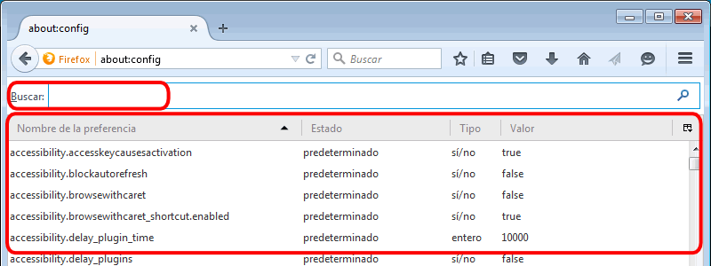
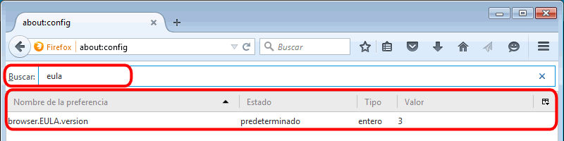
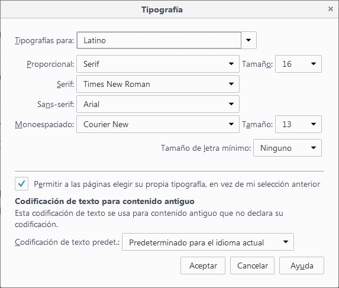
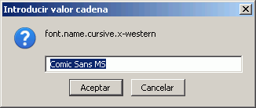
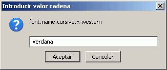
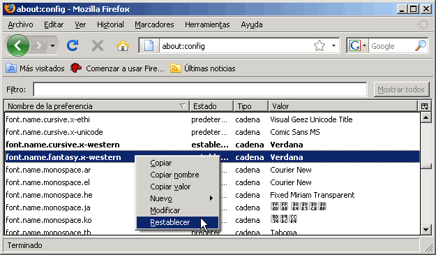
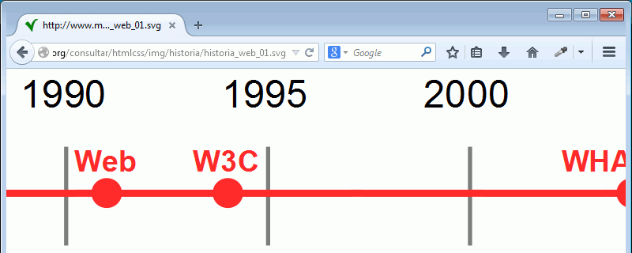
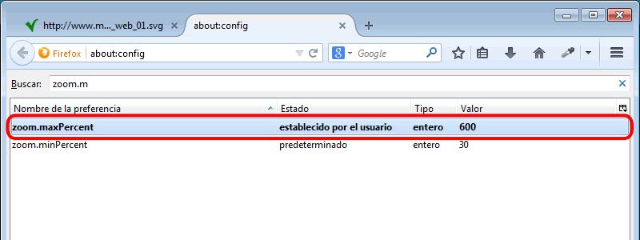

Firefox admite muchísimas más opciones de configuración que las que están disponibles mediante el menú . En esta página se explica cómo acceder a ellas y algunos ejemplos.
 No he terminado de actualizar las capturas a la última versión de Firefox. Algunas capturas de esta página están tomadas de versiones anteriores, por lo que pueden ser ligeramente distintas de lo que se ve en la última versión.
No he terminado de actualizar las capturas a la última versión de Firefox. Algunas capturas de esta página están tomadas de versiones anteriores, por lo que pueden ser ligeramente distintas de lo que se ve en la última versión.
Firefox ofrece mucha información interna en las páginas about:. Para mostrar la lista de páginas about: disponibles, hay que escribir en la barra de dirección de Firefox la dirección about:about.

La página about:about contiene enlaces a diferentes páginas about: (más información en la Wikipedia)
[tabla por completar]
| Dirección | Información mostrada |
|---|---|
| about: | Versión de Firefox |
| about:about | |
| about:accounts | |
| about:addons | |
| about:app-manager | |
| about:buildconfig | Compilación de Firefox |
| about:cache | Caché |
| about:cache?device=memory | Caché en memoria |
| about:cache?device=disk | Caché en disco |
| about:cache?device=offline | Caché offline |
| about:cache-entry | Entrada de la caché |
| about:config | Opciones de configuración avanzada |
| about:crashes | Información enviada a los autores sobre los "cuelgues" de Firefox |
| about:credits | Listado de nombres y apellidos de contribuidores al desarrollo de Firefox |
| about:customizing | |
| about:downloads | |
| about:healthreport | |
| about:home | |
| about:license | Licencias de Firefox |
| about:logo | logo de Firefox |
| about:memory | |
| about:mozilla | Cita del ficticio Libro de Mozilla que bromea sobre la falta de desarrollo de Internet Explorer (tras la derrota de Netscape en la guerra de los navegadores) y la aparición y éxito de Mozilla / Firefox |
| about:networking | |
| about:newtab | |
| about:permissions | |
| about:plugins | Plug-ins instalados |
| about:preferences | |
| about:privatebrowsing | |
| about:rights | |
| about:robots | Saludo de los robots a los humanos |
| about:sessionrestore | |
| about:support | |
| about:sync-log | |
| about:sync-progress | |
| about:sync-tabs | |
| about:telemetry | |
| about:webrtc | |
| about:welcomeback |
Para ver una lista detallada de todas las opciones de configuración de Firefox, se debe escribir en la barra de dirección about:config y pulsar Return.
Salvo que se haya desactivado esta advertencia, Firefox muestra la siguiente advertencia, recordando al usuario que las opciones de configuración sólo deben realizarse con mucho cuidado y sabiendo qué se está cambiando y por qué se desea realizar el cambio.

Si se hace clic en el botón "¡Tendré cuidado, lo prometo!" se muestra la página about:config.

Cada línea de esta ventana muestra el nombre de la preferencia, su estado, su tipo y su valor. Estas preferencias pueden modificarse o eliminarse y también se pueden añadir nuevas preferencias.
Al escribir en el campo de texto Filtro alguna palabra, la ventana muestra únicamente las preferencias en las que aparece esa palabra (en el nombre o en el valor), como muestra la imagen siguiente:

Las familias de fuentes genéricas (serif, sans-serif, cursive, fantasy y monospace) se muestran en Firefox con alguna de las fuentes instaladas en el ordenador.
En el menú se pueden especificar las fuentes correspondientes a las familias genéricas serif, sans-serif y monospace, que en Windows suelen ser, respectivamente, Times New Roman, Arial y Courier New.

Para especificar las fuentes correspondientes a las familias genéricas cursive y fantasy, hay que abrir la página about:config.
La fuente cursive está definida en la preferencia font.name.cursive.x-western. Para modificar la fuente empleada, hay que hacer clic derecho sobre la preferencia y elegir la opción Modificar.

Se abrirá una ventana en la que aparece el nombre de la fuente que se emplea actualmente:

En esta ventana debe introducirse el nombre de la fuente que se desea emplear en su lugar y pulsar el botón Aceptar. En este ejemplo se ha sustituido la fuente Comic Sans MS por la fuente Verdana.

El cambio se muestra inmediatamente en la ventana about:config. A partir de ese momento, la familia cursive se mostrará utilizando la nueva fuente (en este caso Verdana).

La preferencia correspondiente a la fuente fantasy es font.name.fantasy.x-western. Si está preferencia no se encuentra en about:config, hay que hacer clic derecho sobre cualquier preferencia y elegir la opción Nuevo > Cadena.

Se abrirá una ventana en la que hay que escribir el nombre de la preferencia (en este caso, font.name.fantasy.x-western) y pulsar Aceptar.

Se abrirá otra ventana en la que hay que escribir el nombre de la fuente (por ejemplo, Verdana) y pulsar Aceptar.

El cambio se muestra inmediatamente en la ventana about:config. A partir de ese momento, la familia fantasy se mostrará utilizando la nueva fuente (en este caso Verdana).

Para eliminar una preferencia, hay que hacer clic derecho sobre ella y elegir la opción Reiniciar. Al reiniciar Firefox, la preferencia habrá desaparecido de about:config.

Falta contar que las preferencias modificadas y añadidas se añaden al archivo prefs.js que está en C:\Documents and Settings\nombre_de_usuario\Datos de programa\Mozilla\Firefox\Profiles\loquesea.default.
Falta contar cómo se pueden elegir las fuentes genéricas en Internet Explorer (si se puede hacer, que no lo sé).
Firefox permite ampliar una página hasta el 300%, pero ese valor puede aumentarse en la página about:config.
La imagen siguiente se muestra a su tamaño original:

El zoom máximo predeterminado de Firefox es 300%, lo que permite ampliar la imagen anterior al triple de su tamaño original:

Para aumentar el valor del zoom máximo, hay que abrir la página about:config.

La preferencia a modificar es zoom.maxPercent. Escribiendo su nombre en la caja de búsqueda, nos aparecerá en la lista de preferencias. En esa lista puede confirmarse que el valor actual es el valor predeterminado 300%.

Hay que hacer clic derecho en la fila de la preferencia y en el menú contextual, elegir la opción Modificar.

En la ventana emergente hay que escribir el valor máximo que deseemos, por ejemplo 600%, y hacer clic en el botón Aceptar.

En la lista de preferencias se puede comprobar que el valor se ha modificado.

En la página, la imagen puede ahora ampliarse al doble de lo que que se podía antes.